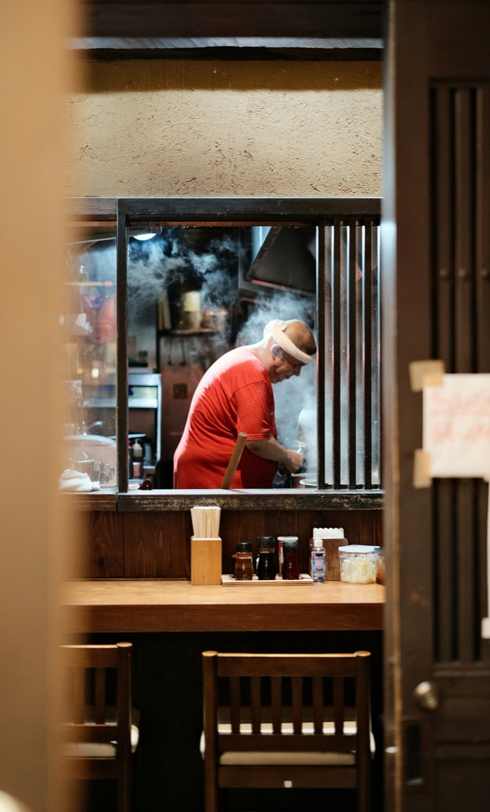
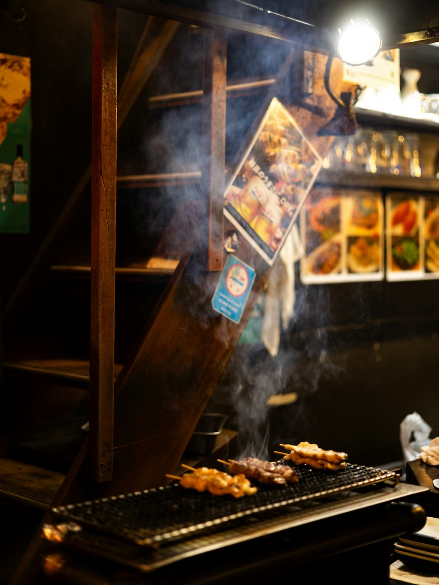
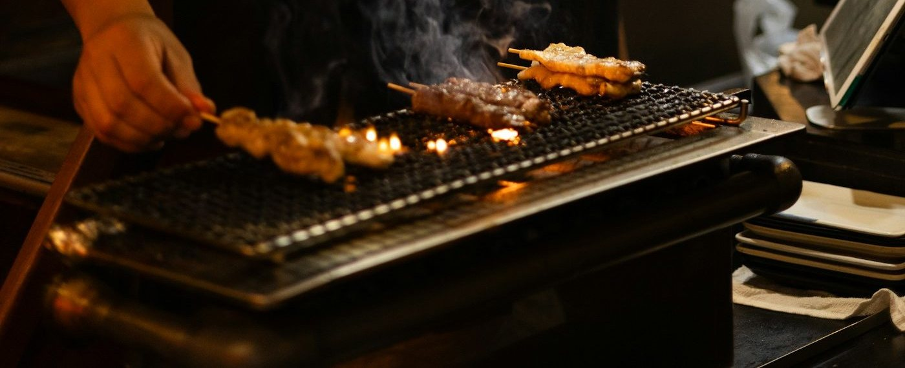
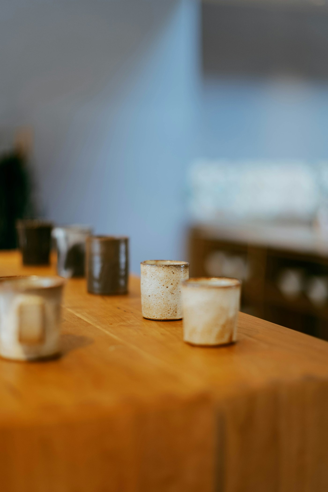
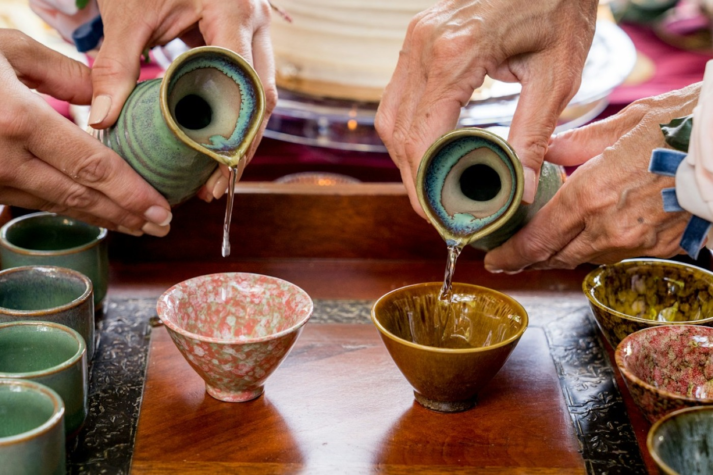
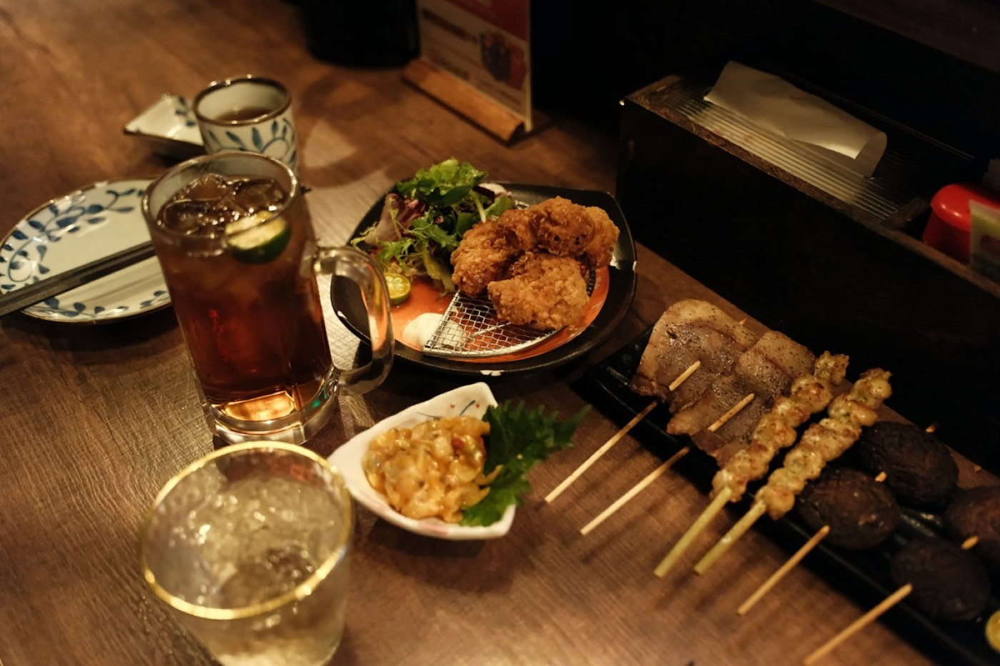
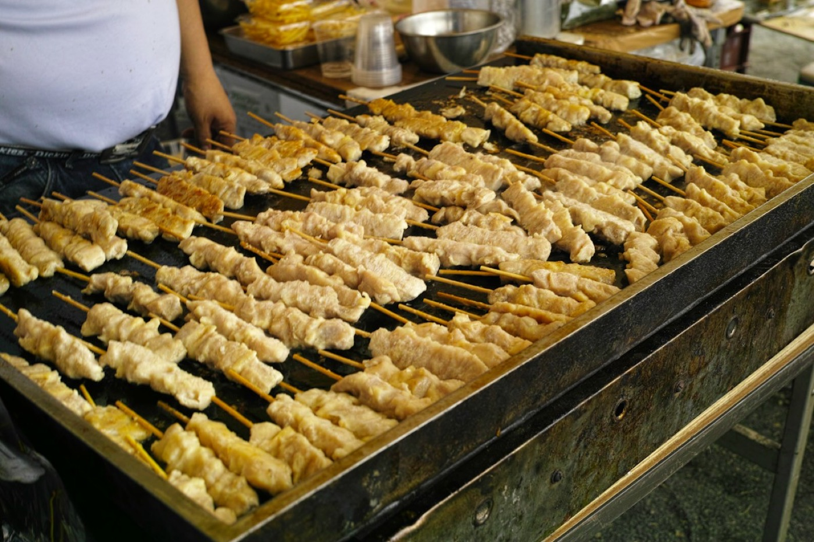

屋台から始まって、三代。タレと炭と焼き台の位置は、初代のまま。それ以外は、その時々のお客さんに合わせて少しずつ変えてきました。
メニューは串五種と燗だけ。タレの壺はこの年のものを、今も使っています。
カウンター8席。焼き台をお客さんの正面に置いたのは、この時から。
家族で来られるように。燗の温度を三つから選べるようにしたのも二代目です。
日本酒を常時十二種に。串は朝に打つ、焼き置きはしない。これだけは守っています。



焼き置きはしません。備長炭の遠火で、皮はぱりっと、中はしっとり。タレは初代から継ぎ足して七十四年、同じ壺です。待つ時間は、燗が温まる時間とだいたい同じ。
初代の壺に、毎日足す。減らさない、絶やさない。
鶏八種、豚と野菜が六種。塩かタレは焼き手にお任せでも。
遠火の強火。急がないのが、いちばんの技です。
同じ酒でも、温度が違えば別の酒。二代目から、燗は三つの温度から選べます。燗番が湯煎で付けるので、少しだけお待ちを。押すと、その温度に合う今夜の一本が出ます。
ふくらみが出て、継ぎ足しのタレとちょうどいい。一合 780円。
日本酒は常時十二種。すべて燗にできます。

古い店は入りにくい、と言われます。常連ばかりに見えるかもしれませんが、みんな最初は一見でした。初めての夜は、こんな流れでどうぞ。
一人ならカウンター。焼き台の正面が、いちばん良い席です。
迷ったら「おまかせで」と一言。名物のつくねから出します。
お腹と相談して。残った燗に合わせて、量は加減します。
※制作例です。答えはすべて架空の設定です。
大きな店ではありません。その代わり、焼き手の手元が見える距離で。小上がりは靴を脱いで、少し長く。


二代目の頃から通っている。つくねの味が変わらないのが、いちばんすごい。
60代・近所の常連(架空)老舗と聞いて緊張していたが、「おまかせで」の一言で全部出てきた。一人でも気楽。
30代・会社員(架空)※架空の声です。
当日でも構いません。焼き場に立っている時間は電話に出られないことがあるので、ここからのご予約が確実です。